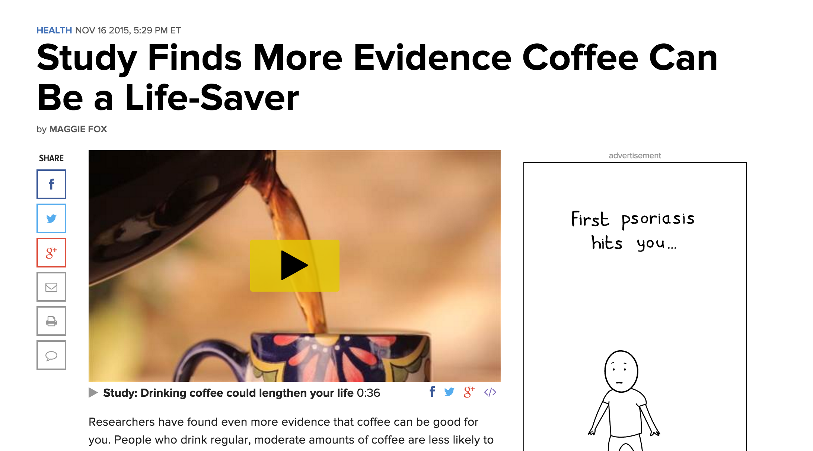
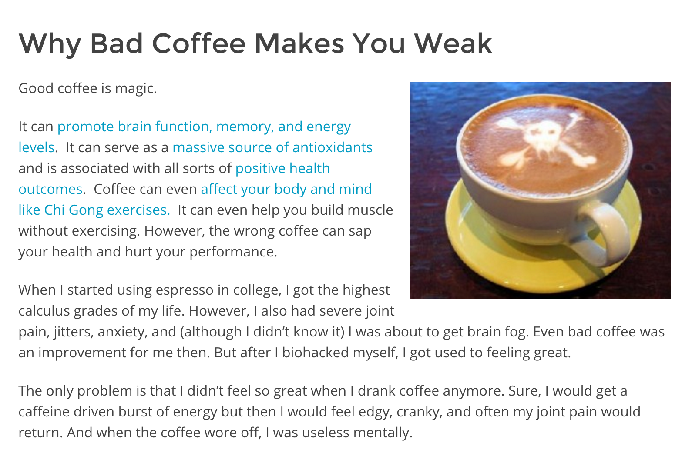
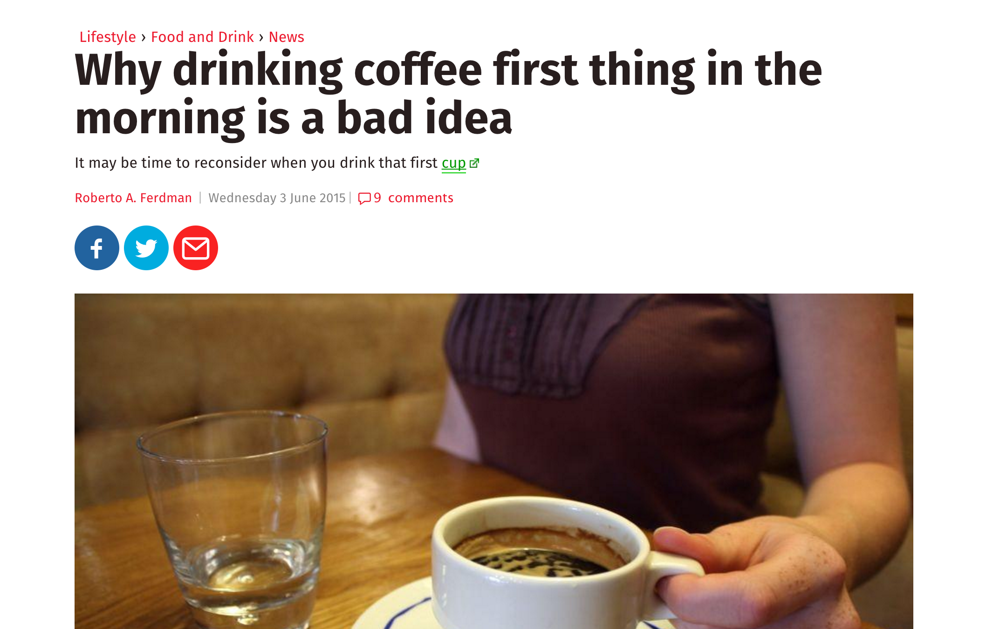
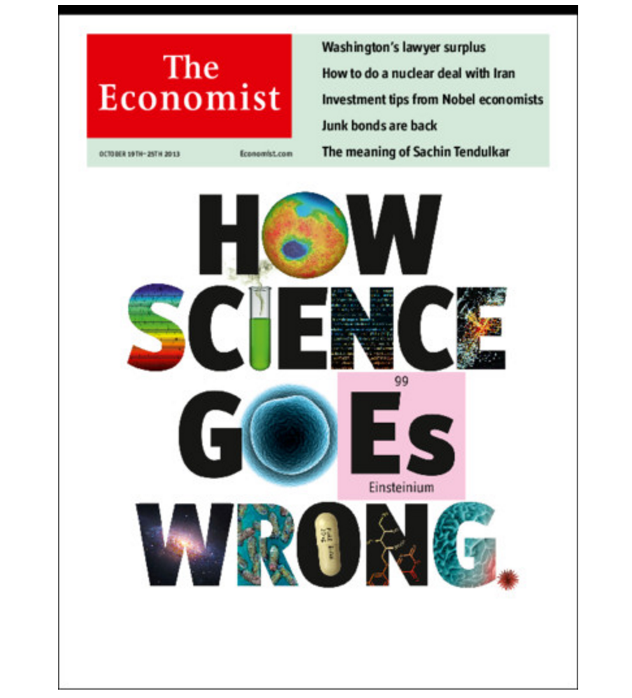
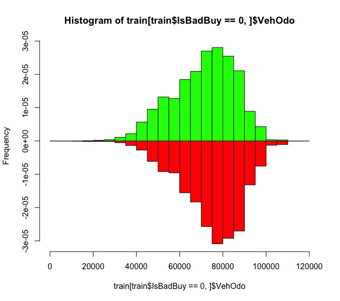
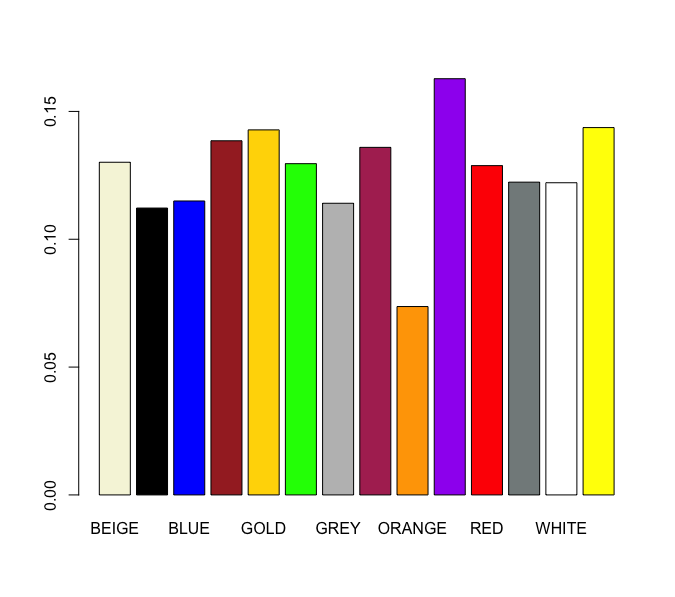
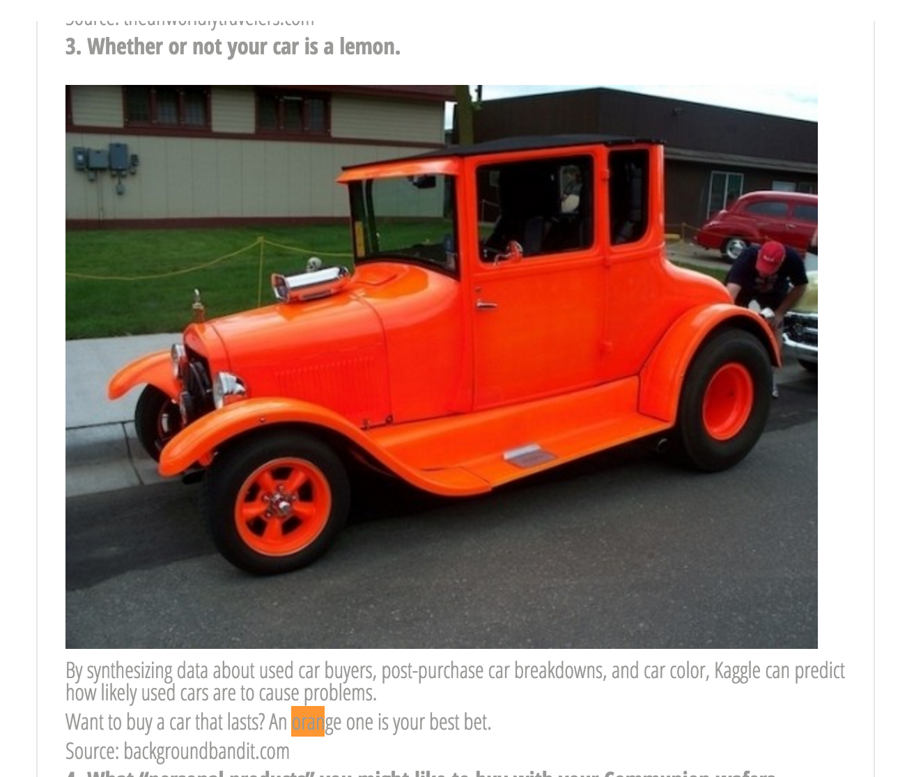
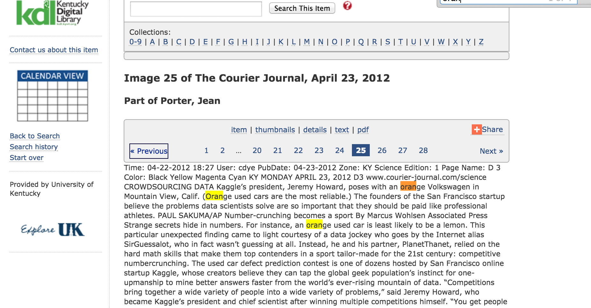
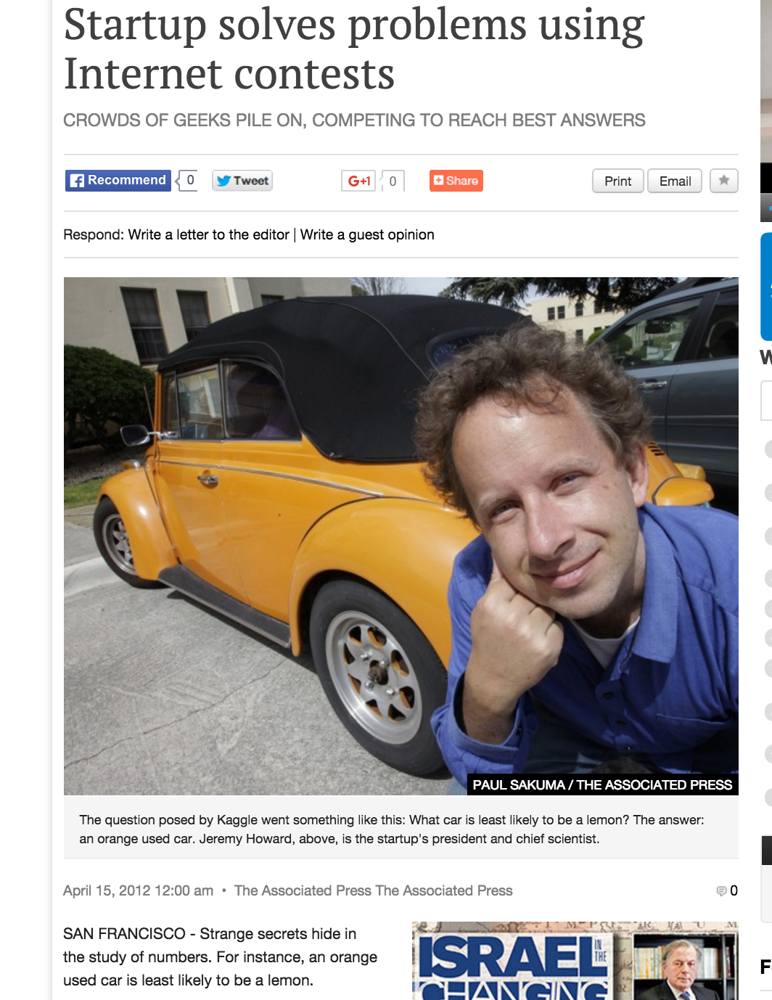
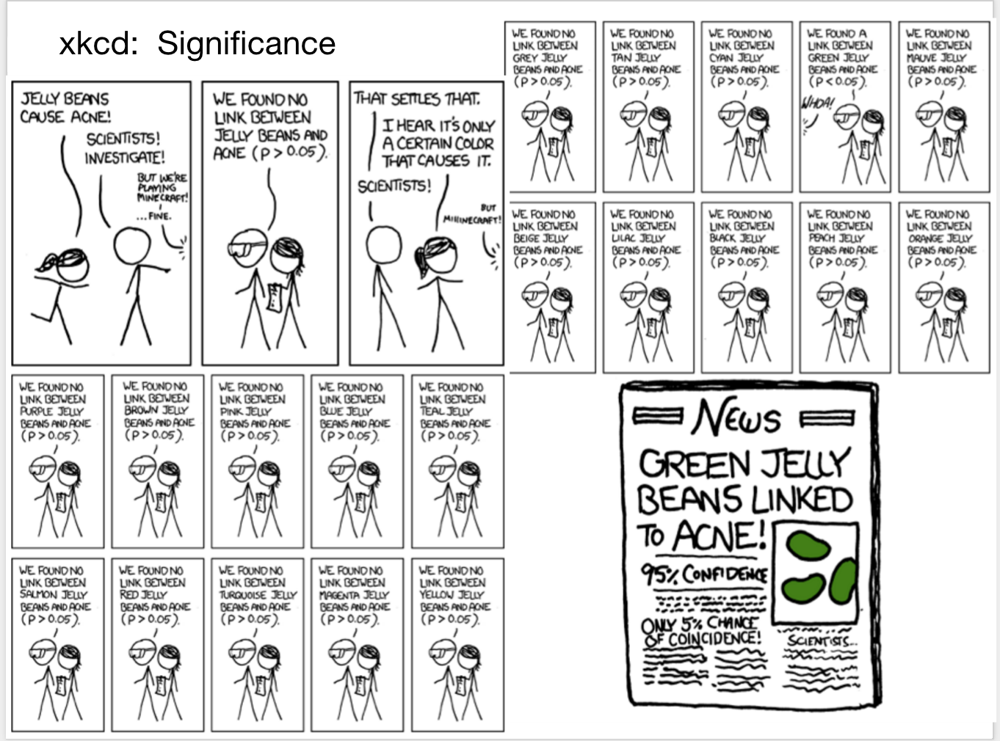

Kenny Darrell
Lead Data Scientist
darrell@datamininglab.com
Data and Analytics can provide a great power
“With great power comes great responsibility” Uncle Ben (Spider Man)
AKA - It’s easier to shoot yourself in the foot
Data has helped elect a president!
Can it inform us of who will be the next president?
If the Redskins win their final home game -> incumbent wins
Since 1936, but not 2004 and 2012 (18-2)
If LA reaches championship Republican wins
Since move to LA in 1960, but not 2008 and 2012 (12-2)
Alabama (D) vs LSU (R)
Worked since 1984 (8-0)
Winning cookie recipe wins election
Worked since 1992, except 2008 (5-1)
But these were jokes, right?



Real research occurred
Data was analyzed
Results were published

We work very hard to prove ourselves correct!
EXAMPLE
load("~/Desktop/car.RData")
head(train) Age IsBadBuy VehOdo Color
1 3 0 86788 BLUE
2 5 0 80824 MAROON
3 2 0 59269 SILVER
4 9 0 78875 MAROON
5 4 0 45341 ORANGE
6 4 0 80785 BLUE
We need a goal by which to measure success
ex: Buy good used cars that don't need repairs (kick cars)
summary(train) Age VehOdo IsBadBuy Color
Min. :0.000 Min. : 4825 Min. :0.0000 SILVER :10275
1st Qu.:3.000 1st Qu.: 61930 1st Qu.:0.0000 WHITE : 8321
Median :4.000 Median : 73399 Median :0.0000 BLUE : 7054
Mean :4.171 Mean : 71528 Mean :0.1223 GREY : 5391
3rd Qu.:5.000 3rd Qu.: 82392 3rd Qu.:0.0000 BLACK : 5196
Max. :9.000 Max. :115026 Max. :1.0000 RED : 4247
(Other): 9351 We want to indentify the lemons, then avoid them
table(train$IsBadBuy)
0 1
43739 6096
This is a rare event scenerio
What traits can help us predict the lemon-ality?
I don't see a huge difference

More interesting!

We have statistics for this purpose!
How likely could this occur at random?
pval(train, 'ORANGE')[1] 0.003342797Very significant
We can publish!



Should we believe this result?
What happens when we use this info?
mod1 <- glm(IsBadBuy ~ Color, data = train, family = "binomial")
summary(mod1)Call:
glm(formula = IsBadBuy ~ Color, family = "binomial", data = train)
Deviance Residuals:
Min 1Q Median 3Q Max
-0.5961 -0.5109 -0.5103 -0.4922 2.2838
Coefficients:
Estimate Std. Error z value Pr(>|z|)
(Intercept) -1.899913 0.089660 -21.190 < 2e-16 ***
ColorBLACK -0.168533 0.099855 -1.688 0.09145 .
ColorBLUE -0.141035 0.097119 -1.452 0.14645
ColorORANGE -0.631511 0.243607 -2.592 0.00953 **
ColorPURPLE 0.262304 0.190993 1.373 0.16964
ColorBROWN 0.072222 0.190659 0.379 0.70484
---
Signif. codes: 0 '***' 0.001 '**' 0.01 '*' 0.05 '.' 0.1 ' ' 1
(Dispersion parameter for binomial family taken to be 1)
Null deviance: 37030 on 49834 degrees of freedom
Residual deviance: 36987 on 49821 degrees of freedom
AIC: 37015
Number of Fisher Scoring iterations: 4Currently 1000 cars for sale
buy <- test[sample(nrow(test), 1000), ]
sum(buy$IsBadBuy)[1] 136I run my model
res1 <- predict(mod1, newdata = buy, type = 'response')
cutoff <- .12 # My cutoffI can only buy 80
res1 <- data.frame(p = res1, act = buy$IsBadBuy)
res1 <- res1[order(res1$p), ][1:80, ]And I'm stuck with
sum(res1$act)
[1] 10Except it was very close to random!
prop.test(c(sum(res1$act), nrow(res1)),
c(sum(buy$IsBadBuy), 1000),
alternative = 'less')$p.value[1] 0.4629769
Target shuffling to the rescue
Wait, What?
Analyze data, note its strength
(e.g., R-squared, lift, correlation, explanatory power)
Randomly shuffle the target to “break the relationship” between output and its inputs
Search for a new best model – or “most interesting result” - and save its strength
Repeat steps 2 and 3 and create a distribution of the strengths of the “Best Apparent Discoveries” (BADs)
Evaluate where your true results (from step 1) are on (or beyond) this BAD distribution. This is its “significance”, or probability that a result as strong as it can occur by chance.
m <- c(pval(train, 'ORANGE'))
copy_train <- train
for (i in 1:1000) {
copy_train$IsBadBuy <- sample(copy_train$IsBadBuy)
ps <- sapply(levels(train$Color), function(x) pval(copy_train, x))
m <- c(m, min(ps))
}
min(which(sort(m) == m[1])) / length(m)
[1] 0.05494505
Target shuffling tells us our model is junk! When it does like a model it is a very good sign that we have something real!
t.test(train[train$IsBadBuy == 0, ]$VehOdo,
train[train$IsBadBuy == 1, ]$VehOdo,
alternative = 'less')$p.value[1] 3.291555e-85m <- c(pvals(train))
copy_train <- train
for (i in 1:1000) {
copy_train$IsBadBuy <- sample(copy_train$IsBadBuy)
ps <- pvals(copy_train)
m <- c(m, min(ps))
}
min(which(sort(m) == m[1])) / length(m)[1] 0.000999001This statistic also got worse, but it is still much better than random!
mod2 <- glm(IsBadBuy ~ VehOdo,
data = train, family = "binomial")
summary(mod2)
Call:
glm(formula = IsBadBuy ~ VehOdo, family = "binomial", data = train)
Deviance Residuals:
Min 1Q Median 3Q Max
-0.7072 -0.5468 -0.4986 -0.4285 2.5753
Coefficients:
Estimate Std. Error z value Pr(>|z|)
(Intercept) -3.372e+00 7.592e-02 -44.41 <2e-16 ***
VehOdo 1.919e-05 1.003e-06 19.13 <2e-16 ***
---
Signif. codes: 0 '***' 0.001 '**' 0.01 '*' 0.05 '.' 0.1 ' ' 1
(Dispersion parameter for binomial family taken to be 1)
Null deviance: 37030 on 49834 degrees of freedom
Residual deviance: 36647 on 49833 degrees of freedom
AIC: 36651
Number of Fisher Scoring iterations: 5Currently 1000 cars for sale
sum(buy$IsBadBuy)[1] 136I run my model
res2 <- predict(mod2, newdata = buy, type = 'response')I can only buy 80
res2 <- data.frame(p = res2, act = buy$IsBadBuy)
res2 <- res2[order(res2$p), ][1:80, ]And I'm stuck with
sum(res2$act)
[1] 4prop.test(c(sum(res2$act), nrow(res2)),
c(sum(buy$IsBadBuy), 1000),
alternative = 'less')$p.value[1] 0.02615255We need the mindset of proving something false, not true.
Nobody goes to work with the goal of breaking everything they have done, but the real world has no problem doing it for you.
Amgen could only replicate 6/58 studies
Bayer Heathcare replicated only 25% of 67 studies
BMJ: 92% of 1,500 referees missed serious errors
157/304 Journals accepted fake Bohannon paper
Stan Young: Examined controlled experiments trying to replicate 12 data “discoveries”:
0 replicated; 7 neutral; 5 reversed

We can always find something interesting just by randomness
We love stories and will believe anything, thus interpretability is no protection against error
Science requires replication & transparency 65-95% “health discovery” papers are false, due to vast search effect (multiple comparison)